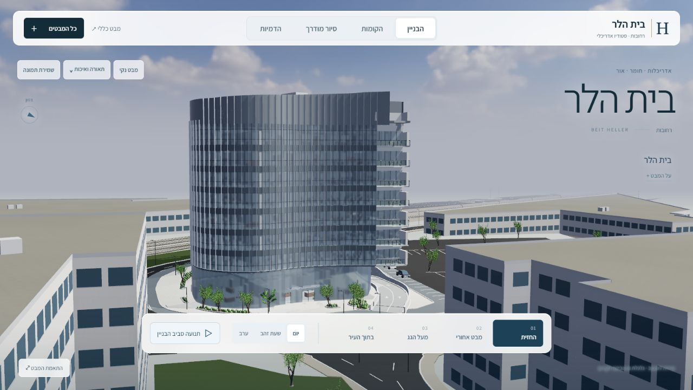
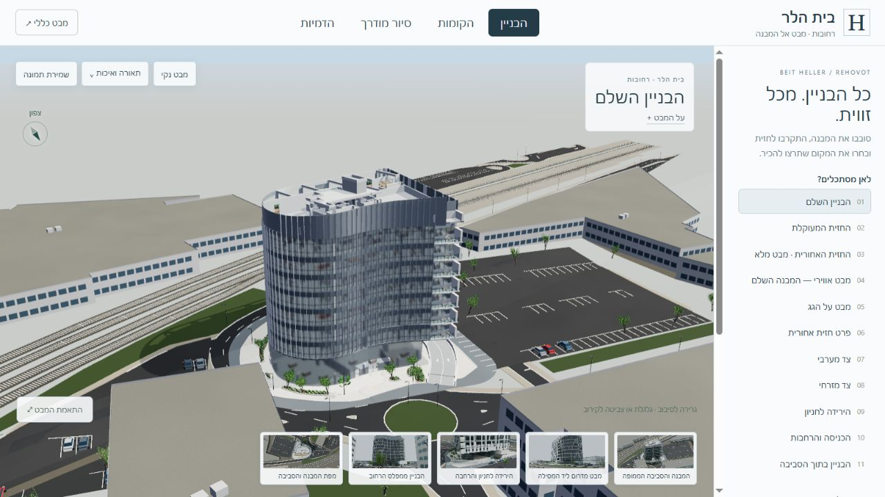

הבניין במרכז
תצוגה על פני המסך, ניווט צף, מגירת מבטים ומצב תצוגה נקייה. ממשק עברי שמתאים גם למסך צר.
מהדורה 05 / אוקטובר 2026
יותר מקום לאדריכלות. תאורה שמשנה את האווירה, זכוכית שמגיבה לשמיים ומצלמה שנעה סביב המבנה.


צילומי מסך באותו גודל חלון. זווית הפתיחה והמסגור השתנו כחלק מהעיצוב.
תצוגה על פני המסך, ניווט צף, מגירת מבטים ומצב תצוגה נקייה. ממשק עברי שמתאים גם למסך צר.
אור יום, שעת זהב וערב. שמיים פנורמיים, השתקפויות בזכוכית ותאורת חלונות עדינה בשעות הערב.
ארבע קומפוזיציות, מעבר מצלמה הדרגתי וסיבוב אוטומטי לבחירה. אפשר לעצור בכל רגע ולחקור את המודל.
שלושה רינדורים חדשים מתוך מודל הפרויקט, ברזולוציה של 1920 × 1200. בגלריה מוצג המקור של כל תמונה.